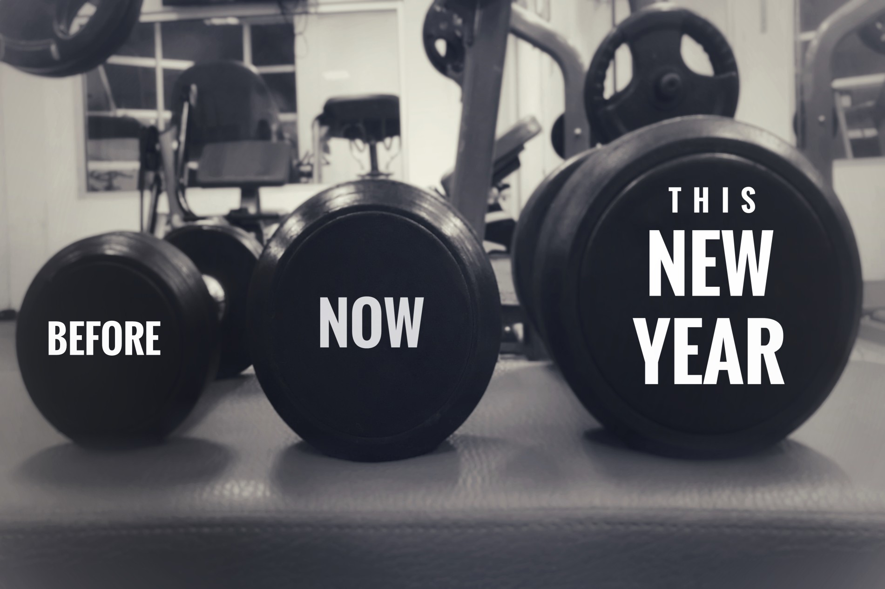

Born in Tainan, Taiwan - a city full of humanity, parents with
democratic and cheerful education since childhood,and teach that you must be responsible
and learn from mistakes in every challenge you encounter. Growing up in such an environment,
Develop positive action and thoughtful judgment to become an independent person.
--------------- PERSONAL QUALITIES ---------------
- Have ideas and the courage to try and challenge knowledge in other fields.
- Can self-reflection and improve on mistakes.
- Quickly learn and master new technology; equally successful
in both team and self-directed settings; and proficient in a range of Computer graphics software and tools.
From high school to college graduation, I learned relevant knowledge and practical skills in
the field of machinery, and also used the summer vacation to work in related companies. After graduation,
I started the life of an engineer...
Currently working as a mechanical design engineer, with 4+ years of experience.
--------------- ENGINEER EXPERIENCE ---------------
- According to customer equipment requirements and conditions select and design the most suitable product.
- Assist processing person to design and improve product processing problems.
- For the actual operation of the product, contact the parent company (Japan, Germany)
and other country branches for technical elimination.

After work, I like to play ball and exercise. Exercise can not only relieve work pressure,
but also maintain my posture. In addition to sports, I also learn professional knowledge and languages in other fields,
and take programming related certificate and Japanese test in my spare time to increase my professional skills.
In the current environment of advanced technology and information,
the demand for programming applications is developing rapidly. From everyone's mobile phone,
home appliances to cloud technology, programming is inseparable, and I also want to enter this
field with my current programming expertise.
--------------- FUTURE EXPECTATIONS ---------------
- On the job:
- The mission assigned by the boss will be completed as planned.
- Get along well with boss and colleagues.
- Immediately contact to your boss and colleagues about problems that cannot solve by myself.
- Take on the challenge of receiving important work.
- Communicate better by interacting with colleagues.
- Learning:
- Learn professional skills on the job.
- Improve foreign language skills through work and after work.
- Learn new areas of expertise while maintaining original interest.